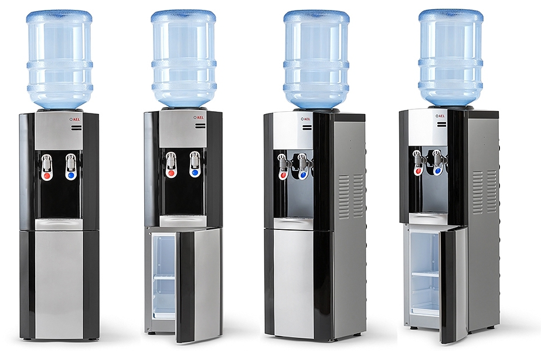
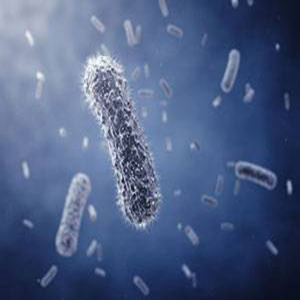
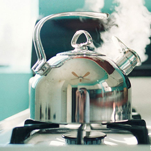
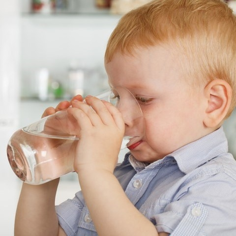

Фильтры для очистки воды и системы очистки Аквафор
Адрес: г. Бишкек, ул. Киевская 77 (у остановки здания Илбирс)
Телефон: (0312) 900 - 410; (0700) 419 - 000; (0551) 445 - 344; (0772) 539 - 348; (0707) 554-130
Новости Аквафор
Фильтр Аквафор — первый в Германии
«Штифтунг Варентест» — организация, которая уже больше 50 лет защищает интересы рядового потребителя в Германии.
Немцы очень щепетильно относятся к тому, на что тратят свои деньги, и прислушиваются к экспертным заключениям «Штифтунг Варентест».
Институт уже не раз доказал свою беспристрастность и профессионализм. Даже если плохого качества товар обнаруживают у известного бренда, результаты все равно публикуются.
Недовольные правдой производители подают в суд, чтобы оспорить результаты, но «Штифтунг Варентест» всегда выигрывает.
подробнееЧем опасна вода из кулера
Знаете ли вы, что воду для кулера разливают в многооборотную тару, которую не всегда тщательно дезинфицируют, а саму воду, бывает, берут прямо из-под крана?
От летней жары в офисе не спасает порой даже кондиционер. Напротив, системы кондиционирования нередко «сушат» воздух в помещении.
Как следствие — хочется пить много и часто. Но будьте осторожны! Офисный кулер, а точнее вода в нём, может таить немало опасностей.
Будьте осторожны и следите за гигиеной на рабочем месте!
подробнееПравда о воде
Человеческий организм на 60-70%, а младенческий на 80% состоит из воды.
Пятимесячный плод состоит из воды на 94%(по этой причине для беременных девушек употреблять высококачественную воду особо важно).
Вода доставляет в клетки организма питательные материалы (витамины, минеральные соки) и уносит отходы жизнедеятельности.
Помимо этого, вода принимет участие в ходе терморегуля-ции и дыхания.
подробнееВода, идеальная для жизни и развитияЮные биологи из Петербурга проверили, как живые организмы реагируют на качество воды.
В воде из-под крана листовому салату совсем плохо, в бутилированной - не многим лучше.
Так какая вода идеальна для жизни? Результаты эксперимента опубликовала газета “Комсомольская правда” в апреле 2016.
подробнееКакую воду пьют люди в разных странах?Каждый год Организация объединенных наций проводит Всемирный День воды, чтобы привлечь внимание к проблемам водных ресурсов в разных странах. В 2016 году отчет о ситуации с водой на планете будет объявлен 24 марта в Париже и 29 марта в Нью-Йорке. А пока мы выбрали факты и цифры о питьевой воде в России и мире.
подробнееКак превратить чай в лекарство?Ещё с древних времён китайские мудрецы утверждали, что чай – одно из самых лучших лекарств. Ведь чай имеет противовирусный и противовоспалительный эффекты, очищает сосуды, снижает холестерин и поддерживает молодость кожи. Список полезных свойств чая можно перечислять долго.
подробнееВода из-под крана распространяет больше микробов, чем унитазУченые из Калифорнийского университета выяснили, от чего воздух в жилом помещении загрязняется бактериями сильнее всего. Для исследоваения выбрали 29 домов в Сан-Франциско. Сначала ученые определяли виды и колличество бактерий: на коврах, шторках и полотенцах, в холодильнике, на кафельной плитке, в раковине, в водопроводной воде и в других местах.
подробнееВода из-под крана - источник аллергииАмериканские учёные обнаружили возможную причину возникновения аллергии. Исследование, опубликованное в журнале «Annals of Allergy, Asthma and Immunology», подтвердило, что иммунный дисбаланс связан с накоплением в организме дихлорфенола – вещества, образующегося при хлорировании воды.
подробнее7 способов определить качество воды в домашних условияхСамый простой эксперимент для определения качества воды - оценка по внешнему виду и по вкусу. Вода должна быть прозрачной, без осадка, без химического или какого-либо другого запаха.
подробнееКакой вред для организма человека наносит накипьВ некоторых материалах, которые пропагандируют пользу неочищенной воды, утверждается, что присутствующие в ней примеси совершенно безвредны. Кальций, например, используется для «строительства» зубной эмали.
подробнееВода из-под крана провоцирует ожирение у детейРоссийские ученые выяснили, что вода из-под крана повышает риск развития ожирения у детей.
Обмен веществ нарушается из-за хлора, который добавляют в воду на очистных станциях.
Хлорирование воды применяют в России повсеместно как защиту от бактерий.
Пока не придумали другого настолько же надежного и дешевого способа обеззараживать воду в муниципальном водоснабжении.
Однако уже десятки научных исследований доказывают: постоянно пить такую воду вредно.
подробнее
 Правда о воде
Правда о воде
 Вода, идеальная для жизни и развития
Вода, идеальная для жизни и развития Какую воду пьют люди в разных странах?
Какую воду пьют люди в разных странах? Как превратить чай в лекарство?
Как превратить чай в лекарство?